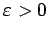

Inhalt Index DeskTop Bronstein

 Optimierung Lineare Optimierung Simplexverfahren Übergang zum neuen Simplextableau
Optimierung Lineare Optimierung Simplexverfahren Übergang zum neuen Simplextableau


Ist in einem Simplextableau nach erfolgter Pivotspaltenwahl die Festlegung der Pivotzeile nicht eindeutig möglich, dann wird das neue Tableau eine entartete Ecke darstellen. Geometrisch ist eine entartete Ecke als Zusammenfallen mehrerer Ecken in einem Punkt interpretierbar. Für eine solche Ecke gibt es mehrere Basen. Somit kann der Fall eintreten, daß einige Austauschschritte ausgeführt werden, ohne zu einer neuen Ecke zu gelangen. Es sind sogar Beispiele konstruierbar, die nach einigen Schritten ein bereits betrachtetes Tableau ergeben, so daß unendlich viele Zyklen auftreten können.
Beim Auftreten einer entarteten Ecke ist es möglich, das Gleichungssystem durch Addition von (mit einem geeigneten ) zu den Restriktionskonstanten bi so zu stören, daß diese und alle folgenden Ecken des gestörten Systems nicht mehr entartet sind und das Optimum des gestörten Problems mit dem des ungestörten Problems übereinstimmt, wenn man in der Lösung  setzt. Algorithmisch wird diese Störung durch einen Zusatz zum Simplextableau erreicht, worauf hier nicht eingegangen werden soll.
setzt. Algorithmisch wird diese Störung durch einen Zusatz zum Simplextableau erreicht, worauf hier nicht eingegangen werden soll.
Werden die Pivotspalte und im nicht eindeutigen Fall die Pivotzeile ,,zufällig`` gewählt, dann ist eine Zyklenbildung in den meisten praktischen Fällen unwahrscheinlich.